CISCO Configuring Dynamic Routing - Routing Information Protocol (RIP) Routing
Routing Information Protocol (RIP) is a distance vector routing protocol. This means the protocol routes based on the smallest hop count between source and destination. RIP itself sends routing updates every 30seconds before throwing away any routes that it has not received updates for every 240seconds. Now if you are wondering what the difference is between a distance vector protocol and link state protoctol, I've put together two diagrams below to highlight the difference. The scenario is a packet going from R1 to R4.
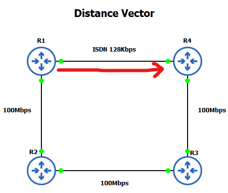
A distance vector protocol such as RIP will evaluate best routing based on the lowest hop count. In this case the 128Kbps ISDN line is chosen. A link state protocol such as Open Shortest Path First (OSPF) will evaluate best pathing based on least cost i.e. bandwidth. The diagram below shows its selected path.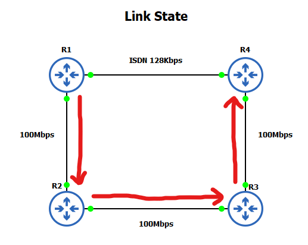
Lab setup
1. GNS3 as the network emulation software.
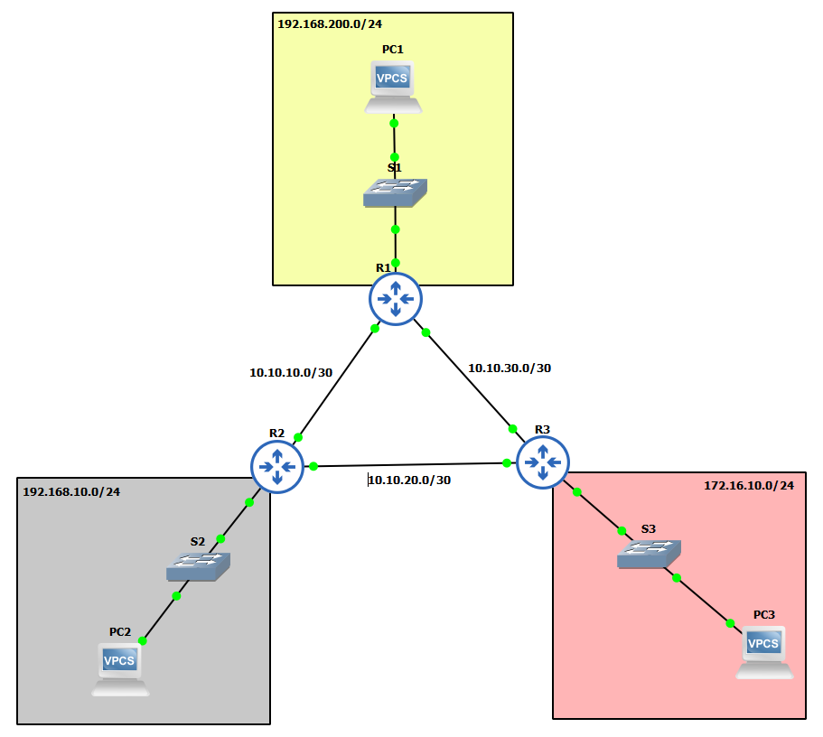
2. I have my 3 PC's (Virtual PC's).
3. 3x switches.
4. 3x CISCO routers on IOSv 15.7 (Router - Cisco Modelling Labs Personal $199).
IP Schema
The IP schemas used in this lab will be (I have tried to keep the numbers simple!):
- 3x LAN subnets being 192.168.200/24, 192.168.10.0/24, and 172.16.10.0/24.
- 3x Router-to-router subnets being 10.10.10.0/30, 10.10.20.0/30, and 10.10.30.0/24.
IP addressing interfaces and Virtual PC's
First, let's IP address the Virtual PC's:
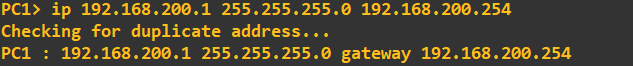
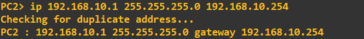
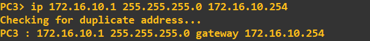
I am now going to IP address the router interfaces attached to each of these LAN's. To make things easier to follow, I have attached interface gi0/0 of each of the routers to the LAN. The address I am going to assign to each of these interfaces is the last address in the subnet.
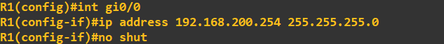
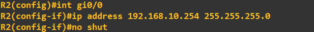
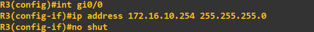
Finally, let's IP address the interfaces connected on the router-to-router links:
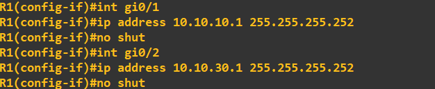
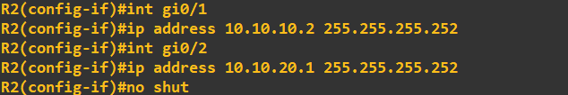
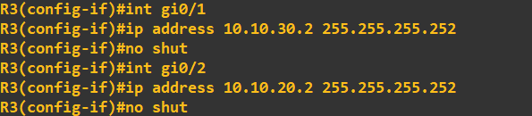
At this point I recommend firing a few pings around from the devices to ensure they have connectivity and no mistakes have been made:
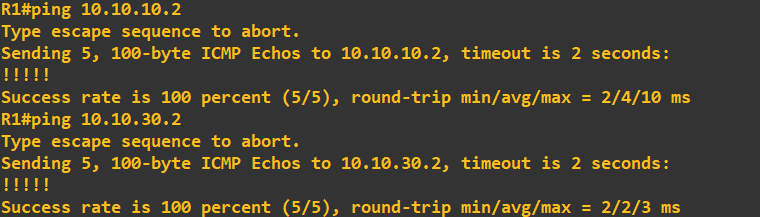
Just so there is no confusion at this stage, this is how my router links are set up:
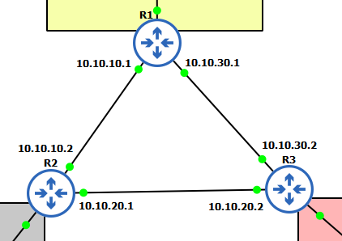
Employing RIP
In our current setup none of our PC's can speak. Basically, our routers do not know about any other networks other than those they are directly connected. We could at this stage simply add static routes and all would be well. This can become cumbersome as the network evolves so we will employ RIP to advertise its known networks to peers. We can utilise basic authentication with RIPv2, while it is not great, it is better than nothing. Let us start by creating a key chain called 'secrets' with a key value of 'slashroot' (point to note here, you would follow your organisations naming conventions). This is the key all routers must have to be able to authenticate.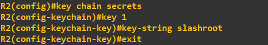
We now apply it to the interfaces (you can also use plain text, I have chose MD5 here):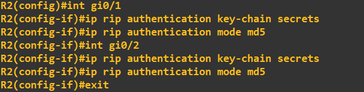
Bear in mind, I have only shown this process on R2; you will need to do it on all routers you want to RIP authenticate. The next step is to enable RIP and start advertising some networks. To do this I enable RIP, set RIP to version 2 and simply enter the networks I want to share.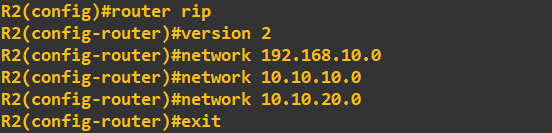
Here is the same process on router 3: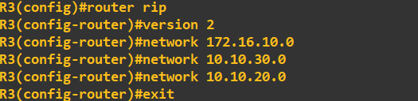
Once the process has been applied to all routers, you can view the RIP traffic in Wireshark, here is a capture from the R1 to R2 link in which you can clearly see the MD5: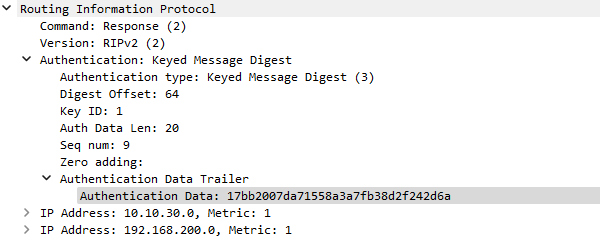
At this stage we are all setup, as we are sharing all networks through at least 1 router, there is no device on this collection of networks that should not be able to ping eachother. Carrying out a quick check from PC1 to PC2 and PC3 gives us confidence: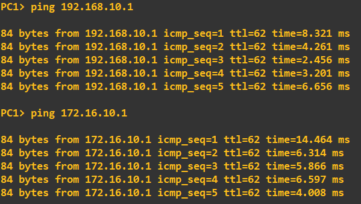
For further information, it is worth using the following 2 commands on your routers to visibly see your configuration:show ip protocols
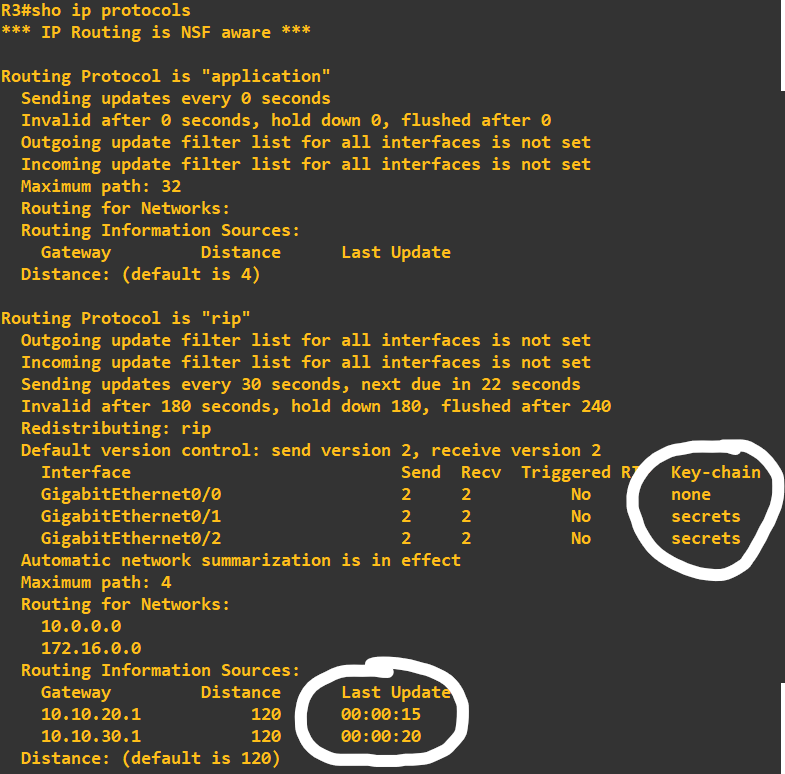
This shows the output on R3. You can clearly see the 'Last Update' time and 'Key-chain' being used. Next have a look at:show ip route
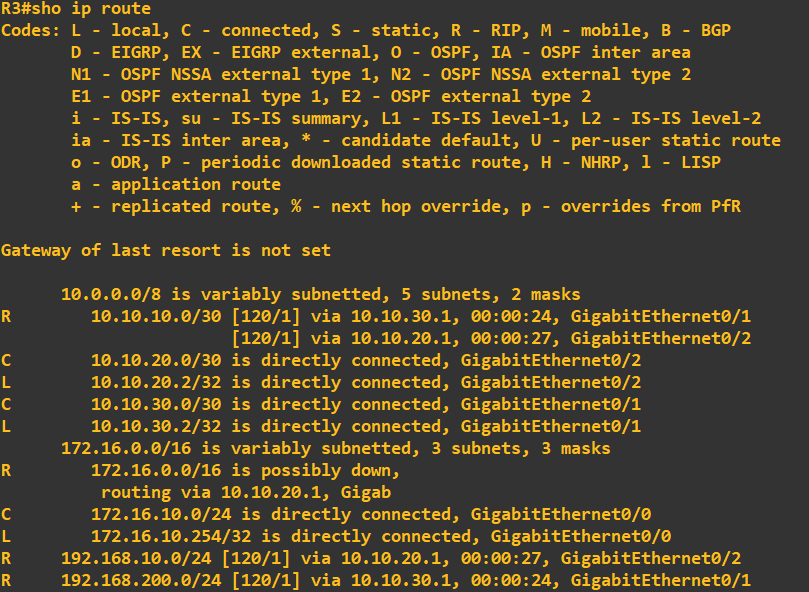
Here you can see all the routes that your router now knows.